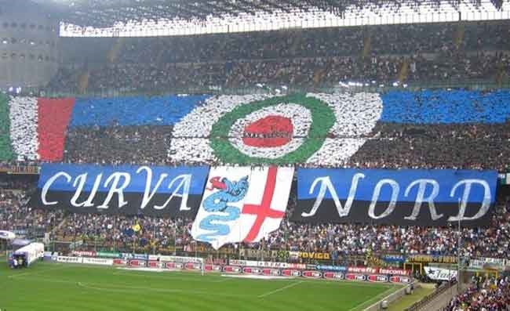

La storia dei campi di gioco dell'Inter riflette l'evoluzione del club nel cuore di Milano. Inizialmente, il campo sportivo al numero 115 di Ripa Ticinese fu la prima casa della squadra, caratterizzato dal lato affiancato al Naviglio Grande, che richiedeva una persona in barca per recuperare i palloni finiti in acqua. Successivamente, dal 1913, l'Inter si trasferì al Campo Goldoni, poi intitolato a Virgilio Fossati nel 1928. Dopo il crollo della tribuna nel 1930, l'Inter si spostò temporaneamente all'Arena Civica fino al 1947, condividendo l'impianto con il Milan durante la Seconda Guerra Mondiale a causa delle difficoltà di accesso a San Siro per la penuria di energia elettrica. Dal 1947, San Siro divenne la sede stabile dell'Inter, situata nel quartiere omonimo di Milano. L'impianto, inaugurato nel 1926 con una partita tra Inter e Milan, subì ampliamenti significativi tra il 1954 e il 1955, che aumentarono la capacità da 35.000 a 50.000 posti. Successivamente, in vista dei Mondiali del 1990, fu aggiunto un terzo anello, portando la capacità a 85.700 posti, poi ridotti agli attuali 75.923. Dal 1980, lo stadio è intitolato a Giuseppe Meazza, leggenda dell'Inter e del Milan degli anni '30 e '40.
